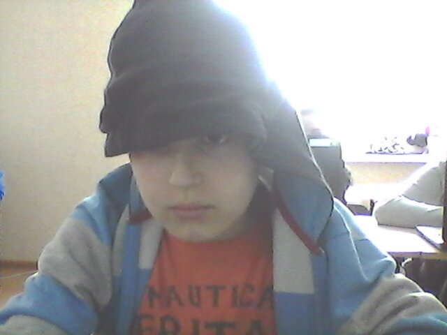

Тимур Каспаров

мои увлечение
Я любльу рисовать и петь.Спросете почему,ну рисую я плохо но смысл афигеный.А петь у меня
получаеться,
я знаю 2 песни на езусть я могу под одну из них спеть караоке.
А ищё у меня на ринктоне есть другая песня "уте папа уте".А 2 "Hard Drave".Впринсыпи всё =)
Досягнення науки і технологіі:ARDUINO
день рождение
город
19 августа 2008
Донецк

- Arduino (Ардуіно) — апаратна обчислювальна платформа для аматорського конструювання, основними компонентами якої є плата мікроконтролера з елементами вводу/виводу та середовище розробки Processing/Wiring на мові програмування, що є підмножиною C/C++. Arduino може використовуватися як для створення автономних інтерактивних об'єктів, так і підключатися до програмного забезпечення, яке виконується на комп'ютері (наприклад: Processing, Adobe Flash, Max/MSP, Pure Data, SuperCollider). Інформація про плату (рисунок друкованої плати, специфікації елементів, програмне забезпечення) знаходяться у відкритому доступі і можуть бути використані тими, хто воліє створювати плати власноруч